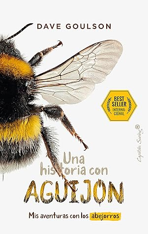

Una historia con aguijón: Mis aventuras con los abejorros (Ensayo) (Spanish Edition)
Reseña por Jorge I. Zuluaga

Ver detalles · Ver reseña en GoodReads (necesita cuenta)
El estilo desenfadado y auténtico de su autor, el profesor de biología Dave Goulson, logra con este libro el cometido general de la divulgación científica: hacernos creer que un tema que puede llegar a ser muy técnico en su especificidad es comprensible por cualquiera y, al mismo tiempo, animarte a saber más sobre él.
Y en el caso de las abejas y los abejorros, nunca fue más importante la buena divulgación.
Me topé con este libro en la librería de un amigo. Para ser un "best seller internacional" –como reza orgullosamente su portada–, no tenía ni idea del autor ni del título (supongo que se vendió como arroz en el Reino Unido y en Europa, y eso es suficiente para los editores). Me animé a leerlo porque trataba sobre las abejas y los abejorros, una familia de animales cuya importancia para nuestra alimentación es cada vez más reconocida por todas las personas (no solamente profesionales de la biología o la conservación, que lo saben desde siempre). No había leído todavía mi primer libro de abejas y este parecía ser una buena opción.
Rápidamente entendí por qué el libro era un best seller internacional.
El autor tiene un estilo de escritura en realidad atractivo. A pesar de ser un ensayo científico con un enfoque dirigido a la conservación, muchas anécdotas de su relación personal desde pequeño con insectos y animales son realmente divertidas y espontáneas. No es común leer a un profesional de la biología describir cómo mató torpemente animales e insectos en sus primeros devaneos infantiles con el tema.
El libro está lleno de datos curiosos y muy interesantes sobre la vida de los abejorros (los protagonistas del libro) y, en general, de muchas especies de la familia de las abejas, incluyendo, por supuesto, la especie más conocida por todos: la abeja melífera.
Esperaba un ensayo mucho más general sobre la biología o la conservación de este grupo de animales, pero el libro dedica muchos capítulos a hablar específicamente sobre las investigaciones y los problemas de conservación del abejorro en el Reino Unido y países relacionados. Esto le resta mucha generalidad y hace que algunos pasajes sean pesados y simplemente prescindibles para cualquiera que no viva en aquel país (de allí que mi calificación no sea de cinco estrellas). Entiendo, sin embargo, la motivación del autor y los editores. A pesar de los capítulos más pesados, terminé disfrutando y leyendo todo el libro, de pasta a pasta.
Aunque pude aprender mucho más sobre abejorros y abejas leyendo un libro con un enfoque más general, en realidad la lectura del texto es suficiente para conocer algunos de los aspectos más importantes de la biología de estos animales, y el autor consigue transmitirlo mientras cuenta divertidas anécdotas sobre su propio trabajo con ellos.
¿Sabían, por ejemplo, que las abejas –seguiré aquí el estilo del autor, que usa este nombre genérico para referirse a abejorros, abejas silvestres, abejas melíferas, etc.– se alimentan no solamente del néctar de las flores, sino también del polen de las plantas que visitan, del que obtienen el suministro de proteína que necesitan? Parece un dato bastante obvio; espero que quienes saben de biología no se burlen. Y es que todos sabemos que las abejas recolectan néctar, pero, al menos yo, desconocía que el polen, que se adhiere a su cuerpo –y a espacios especiales en sus patas diseñados para transportarlo–, también era parte fundamental de su dieta. Antes de este libro pensaba que las abejas simplemente lo transportaban por accidente, cumpliendo así una de sus funciones ecológicas más importantes: la de la polinización.
No sabía tampoco que los abejorros hibernaban y que las reinas pasan casi siete meses al año escondidas en agujeros en el piso o en el tronco de árboles, esperando el final de la primavera para salir a construir sus nidos. Naturalmente, esto ocurre especialmente con las especies que habitan los países subtropicales, principalmente del norte, donde viven la mayoría (otro dato que desconocía).
Me sorprendió conocer –o confirmar– la curiosa biología de la reproducción de estos animales, en la que una abeja reina tiene la función de parir la inmensa mayoría de las abejas de un nido, casi todas hembras; hermanas que cuidarán de los huevos y larvas de su madre, de ella misma, pero con especial celo de todas sus hermanas, con las que comparten el 75 % de la información genética (en contraste con su madre, con la que solo comparten el 50 %). No tenía ni idea de que las abejas hembras –como la mayoría de los insectos y como descubrí aquí– tienen sexo solo una o dos veces en la vida y guardan el semen de los machos para fecundar, a lo largo de su vida, los huevos con los que sostienen o fundan nidos nuevos. También desconocía la tímida función de las abejas macho en las sociedades apícolas: no pican, están en una proporción de casi 1 a 7 respecto de las hembras, son organismos haploides, es decir, solo tienen un juego de cromosomas y viven muy poco. Un verdadero matriarcado.
Desconocía el papel particular de los abejorros en la polinización de muchas plantas que consumimos y que le dan variedad y riqueza a nuestra dieta. Comenzando con los tomates: no podrías tener tomates en tu ensalada sin que un abejorro hubiera ayudado a la planta que los produce a reproducirse.
Descubrí que es un mito que las abejas melíferas son los polinizadores por excelencia del mundo vegetal. También lo son, pero su papel en realidad no es tan mayoritario como el de otras abejas silvestres o los abejorros. De alguna manera, la mayoría de las especies de abejas no productoras de miel son el «detrás de escena» de la polinización, al menos de cara a quienes pensamos que «abeja» es siempre sinónimo de panales y miel.
Recuerdo haberme topado una o dos veces en mi vida con abejorros en el lugar en el que vivo (el Valle de Aburrá en Colombia). Hace mucho, sin embargo, no veo uno (posiblemente el último que vi fue en mi infancia, hace más de 30 años). En este libro aprendí que es posible que esos abejorros hayan desaparecido de mi tierra por la agricultura extensiva o simplemente por la falta de prados y flores silvestres que recuerdo que había con mayor abundancia en mi infancia (incluso en un país dominado por arbustos y plantas de bosques más tupidos). También es posible que algunos de los abejorros que vi cuando era pequeño provinieran de zonas agrícolas, especialmente de sembrados de tomate, leguminosas y otras hortalizas, en los que jugaran un papel en la polinización de estas plantas; sembrados que posiblemente se han reducido significativamente en un país que, si bien es rico en tierra fértil y con un gran potencial agrícola, importa hoy la mayor parte de su comida desde otros países.
Me sorprendió también descubrir que se crían abejorros y abejas en «granjas» industriales (al menos en Europa y Asia); estas abejas están destinadas a producir nidos para la venta que sirven como fuentes de polinizadores en grandes campos de cultivo o en invernaderos. Cuando pienso en «granjas industriales» imagino pollos, marranos o vacas sometidos a condiciones inhumanas –extendiendo la definición de «humano» como persona, ser «sintiente» a los animales de los que nos alimentamos– para producir cantidades exageradas de carne. Pero pensar que hacen algo parecido con las abejas me sorprendió gratamente y, al mismo tiempo, me preocupó terriblemente por partes iguales.
Es definitivo que, después de leer este libro, no volveré a ver una abeja o un abejorro con los mismos ojos. Bueno, si es que me topo con uno en lo que me queda de vida. Espero, de verdad, que sí.